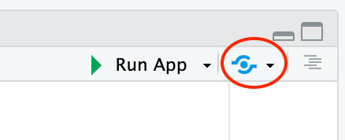

Posit Connect is a publication platform for deploying content built in R and Python to share with a broad audience. R users may want to develop content (like Shiny applications or RMarkdown documents) using renv and then publish that content to Posit Connect. This is a supported pattern where renv is used to manage the local project environment and then Posit Connect recreates and manages the deployment environment.
Publishing from the RStudio IDE
The RStudio IDE includes a button for push-button deployment to Posit Connect: 
When this option is used to deploy content to Posit Connect, a
manifest file is automatically generated and sent to Posit Connect
describing the project environment. This manifest file will reflect the
project environment create and managed by renv. The renv generated
.Rprofile file should not be included in
deployments to Posit Connect.
Publishing programatically
When publishing content to Posit Connect programatically, it is
necessary to generate a manifest file describing the project
environment. This can be done with the writeManifest()
function from the rsconnect package. When
using renv, the only thing that needs to be considered is that rsconnect
should be installed and executed from within the renv environment so
that it recognizes the local project library when generating the
manifest file. As long as rsconnect is run from within the renv created
environment, it will capture project dependencies from the local renv
library. This can be accomplished by opening the project in RStudio or
by starting the R session from the project root directory. The renv
generated .Rprofile file should not be
included in deployments to Posit Connect.
A word about packrat
Posit Connect uses packrat to restore project environments on the Posit Connect server. This should have no impact on how the user develops content for Posit Connect. It is not necessary for the user to use packrat instead of renv when developing content, as the environment management tool used locally has no impact on the tools RStudio Connect uses for environment management. Therefore, there should be no concerns with using renv to develop content that will be deployed to Posit Connect.